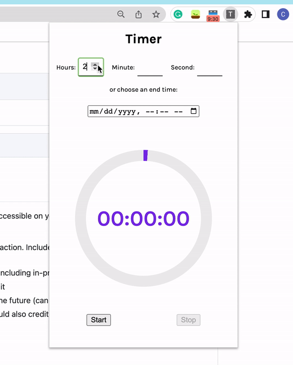
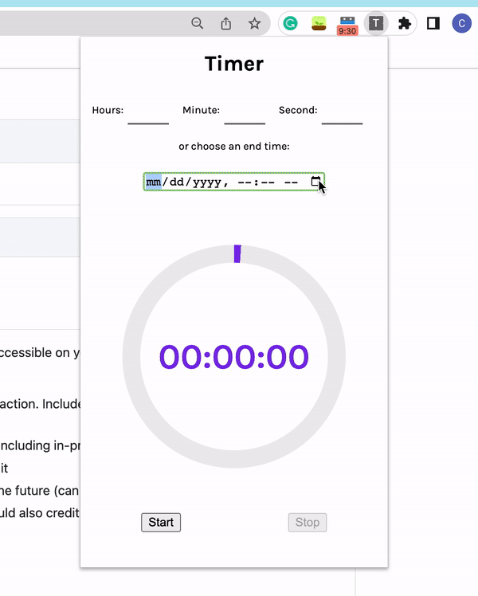
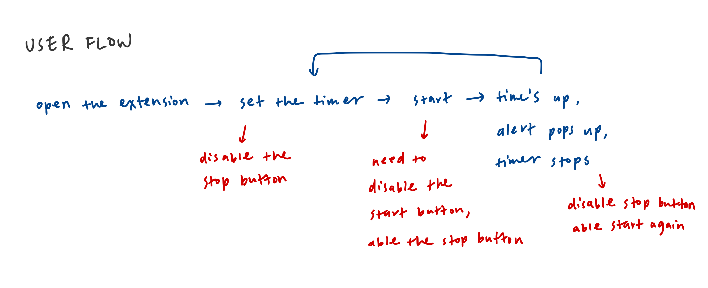
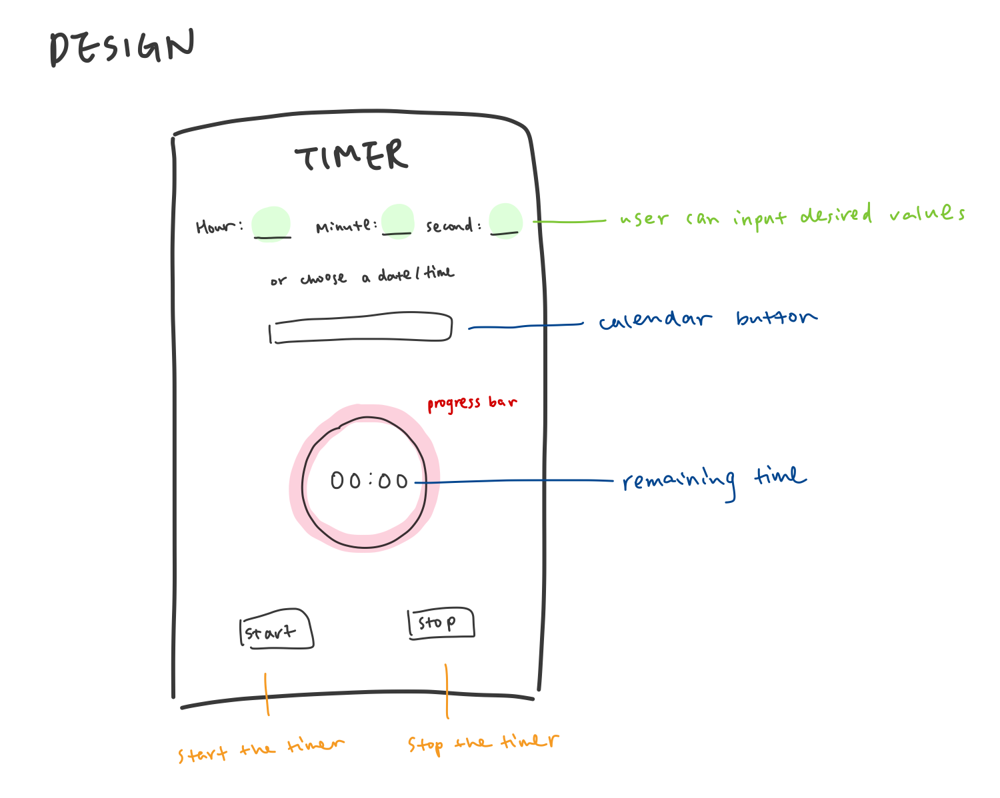
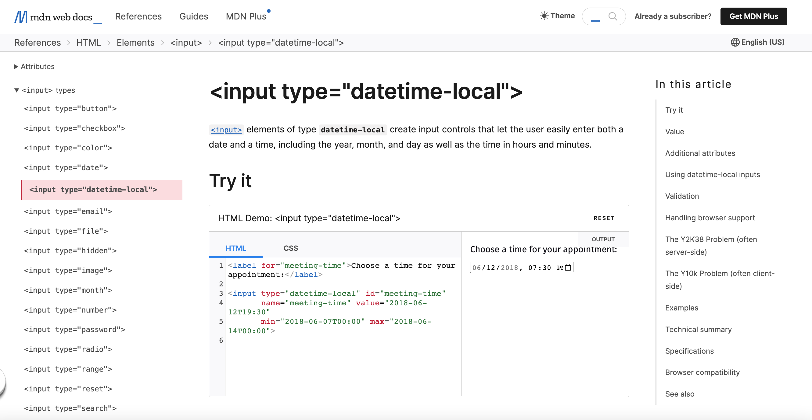
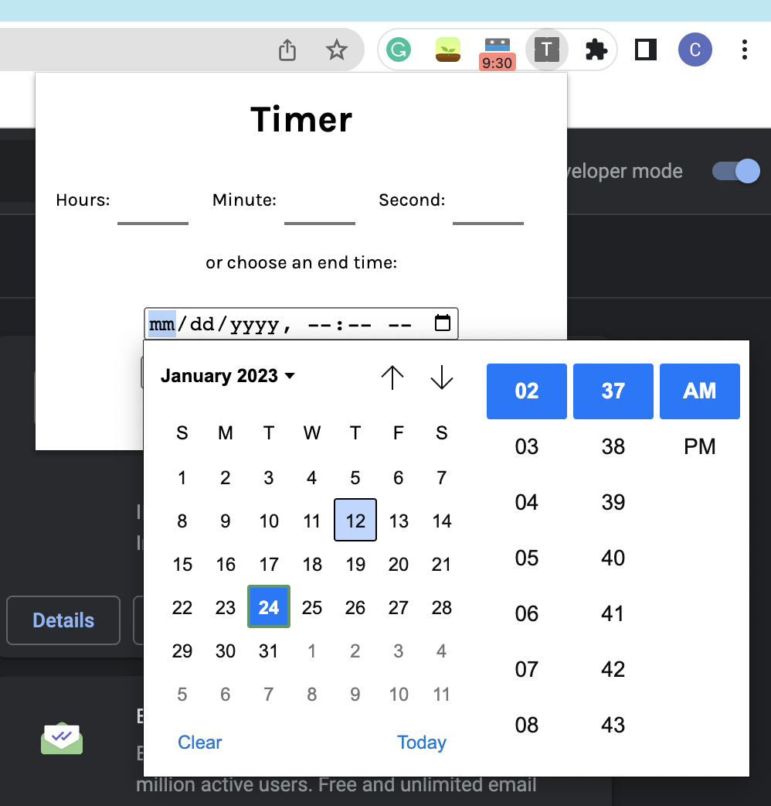
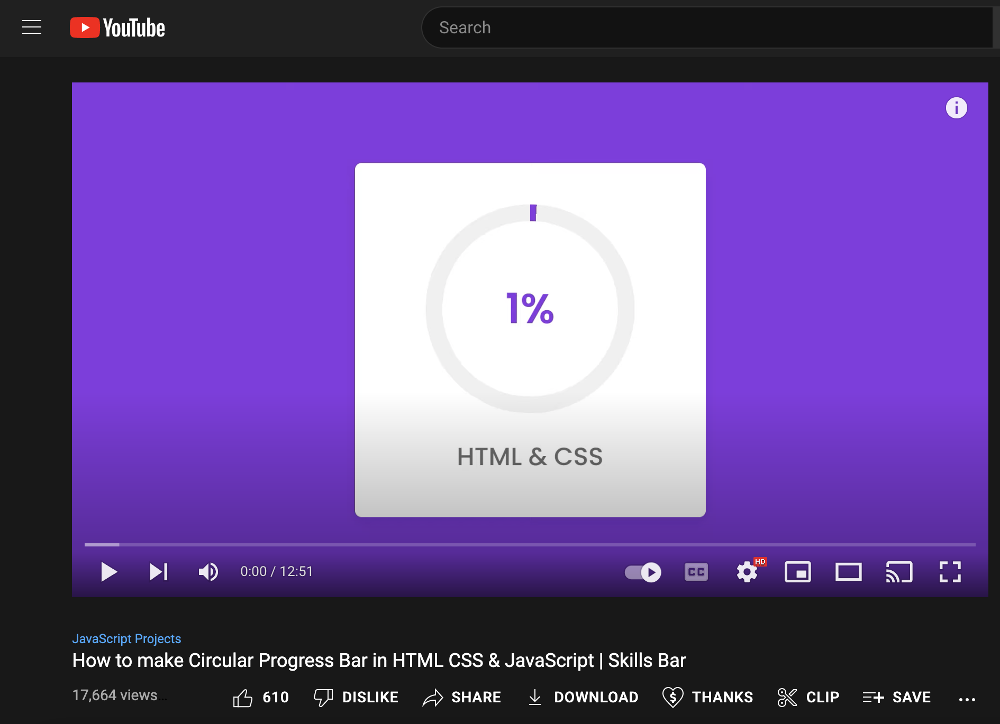
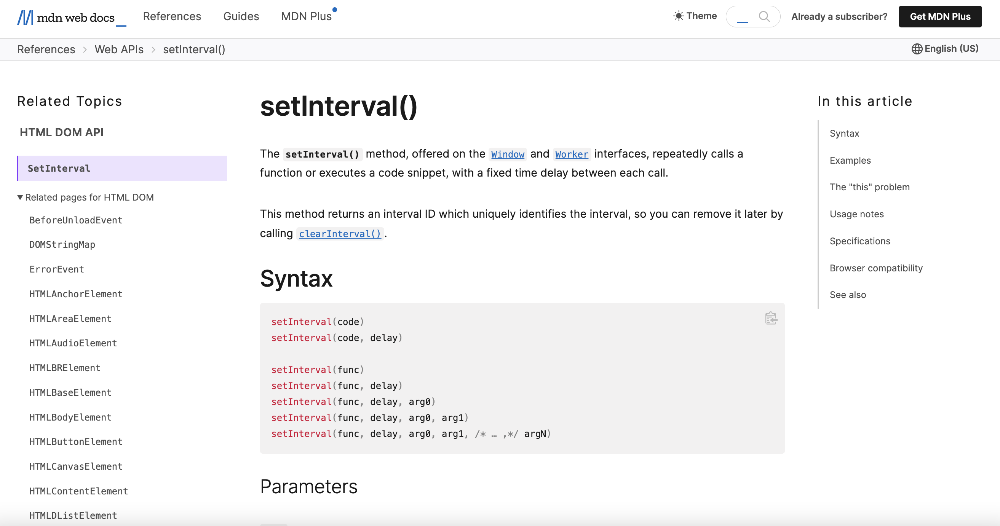

MP1 Writeup
Overview and Usage
Github Page for this timer extension
In this assignment, I made a timer as a chrome extension. The timer allows users to input the amount of time they want to countdown or a desired ending time by entering the date and time.

For inputting the amount of time to countdown, the user can either enter the numbers manually or click the up and down arrows to select the numbers.
For selecting a desired ending date and time, the user can click on the bar showing mm/dd/yy to open the calendar view and select the date and time.
After input, the user clicks the start button to start the timer. The progress bar will start to countdown.
When the timer stops or the user clicks the stop button, an alert will pop up to notify the user time is up.

Development Process
Design
To start this project, I first looked up some example extensions in the Chrome Web Store and the Chrome Extensions API. I also took my interest into account. I always thought about having a timer on my browser extension would be useful, especially a timer that could set a date and time. Combining everything I found online and my idea, I decided to make a timer.
Next, I started to make a user flow to better understand the process of using my extension and design the appearance of the extension on the popup page.
 Basic HTML bones
Next is the coding part. I started with HTML since it helped with visualizing the extension. Comparing Javascript, I am more familiar with HTML and CSS. This is also why I started with HTML and CSS.
However, this assignment was pretty challenging for me since I had never created an extension before. Because of my lack of experience, I looked up more examples and got a better understanding of coding the pop-up page for a chrome extension. For example, I googled how to make a calendar view that allowed people to choose dates and times online. I found a tag called input in HTML that auto-generated a calendar view for me, which was pretty useful for me.
The following image is when I first put the calendar view in my code successfully.
Another source that I found was pretty helpful was the code for a progress bar. It was a video teaching people how to make a circular progress bar in HTML, CSS, and Javascript.
Because of these online tools and resources, I was able to reduce the time spent on HTML and CSS.
Javascript
After HTML and CSS, it was the most difficult part -- Javascript. Javascript was pretty challenging. Although I took CSE 154 Web Development before, I was still confused. To make the process easier, I went online to read a lot of articles and watched many videos about setting a timer in Javascript. For example, I found a method that could make a timer and countdown the remaining time for me automatically -- setInterval, which made my process of building an extension went so smoothly and fast.

Issue: Syntax + Logic Error on Chrome Extensions API
I had some trouble understanding the Chrome Extensions API. Especially the part where I connect popup.js and background.js. I kept running into errors that told me undefined or the endpoint did not exist.
The way I fixed this was utilizing online resources such as StackOverflow. I found that many people had the same problem as me. So I dug into every search result on Google and tried the methods people recommended. Trying different ways and spending a lot of time on it, I finally understood how chrome.runtime.connect worked and found the code that worked for me. (I found the following image pretty useful for me to understand how each script in the extension communicated with the other)

I am glad that many people also had the same issue as me on StackOverflow. Because of StackOverflow, I was able to figure out how chrome extensions worked and build this extension by myself.
Ideas and Future
Some idea that I think would be cool and special is allowing people to save the timers in the extension. I am not sure how that will work and how to code it out now, but I will try to work on it in my free time to explore more Chrome Extensions API and Javascript.
Kudos
Youtube Channel: CodingLab
Chrome Extensions API: Port
Inspiration:Forest: stay focus, be present